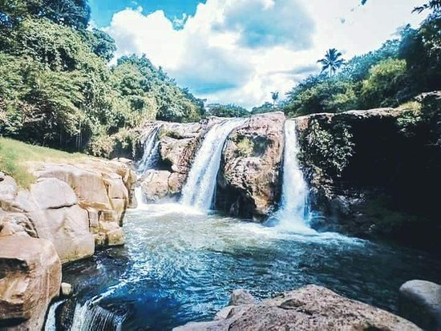
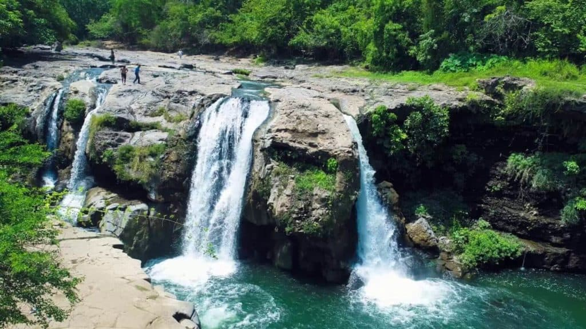
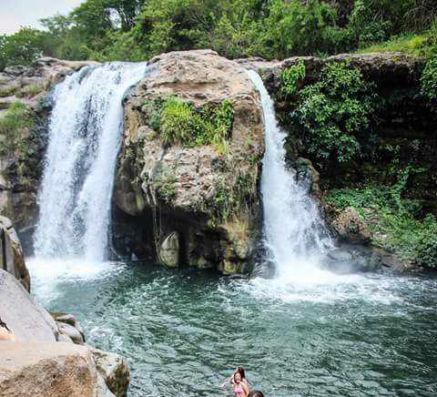

SALTO DE MALACATIUPAN
Entre las cascadas que hay en El Salvador, una de ellas es el Salto de Malacatiupán, una pequeña cascada que se divide en cuatro caídas de agua y que es única en el occidente el país al ser una cascada de aguas termales. Aviso importante: Salto de Malacatiupán es un lugar turístico muy rural, es un lugar metido en el monte y donde han sucedido accidentes. Mas adelante tocamos con mas detalle la peligrosidad de visitar estas cascadas. Así que si las visita, debe tener en cuenta las recomendaciones que damos.
|  |  |
En total son tres corrientes de agua que caen en el Salto de Malacatiupán, estas se dividen al caer en cuatro cascadas y su altura aproximada es de 12 metros. El sitio donde se encuentra el Salto de Malacatiupán es rocoso y las rocas rodean a cierta altura la poza que se forma por la caída de agua.Algo interesante sobre el nombre es que la palabra "malacatiupán" significa "templo redondo" en náhuatl. Por otra parte, algunas personas opinan que en lugar de llamarse Salto de Malacatiupán se debería llamar "salto del gorila" o "salto del mono".
Esto es debido a que si usamos un poco la imaginación, la sección de roca que divide la segunda cascada y la tercera cascada (de izquierda a derecha) se asemeja a la cara de un gorila.
|  |
¿Donde esta?Se encuentra en el municipio de Atiquizaya, departamento de Ahuachapán en la zona occidental de El Salvador. Atiquizaya es parte de la Ruta de Las Flores.Estando en Atiquizaya, la cascada se encuentra a unos 15 minutos desde el pueblo, debiendo de tomar la calle empedrada que está casi que enfrente de la parroquia, la 4 Calle Poniente que te convierte en una calle rústica que según el mapa consultado se llama "Calle a Cantón Río Frío". Como habrán visto en las fotos, el lugar es rocoso y caerse o resbalarse de una roca puede significar la muerte. Se deben tomar ciertas precauciones como por ejemplo, si lleva niños debe saber que es un lugar con riesgo, si lleva ancianos también. Es más, una persona que sea anciana debe valorar bien si vale la pena visitar este sitio solo a ver, ya que como mencionamos, si no tiene la fuerza y habilidad suficiente, no podrá bajar para poderse bañar. |